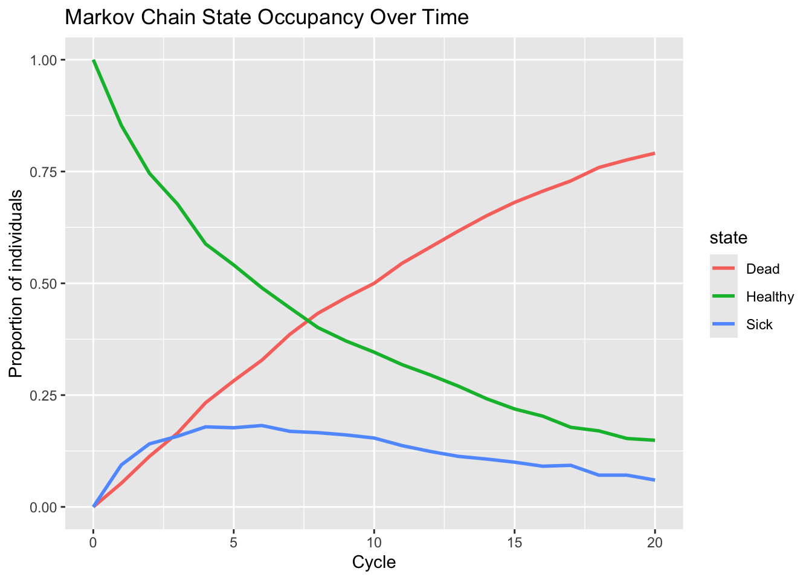

In words: the future depends only on the present, not on the full past.
This is a strong assumption — but often a useful approximation in modeling.
2.3. State distribution over time
If \(\pi_t\) is a row vector of probabilities over states at time \(t\):
\(\pi_0\) is the initial distribution,
Then \(\pi_1 = \pi_0 P\),
\(\pi_2 = \pi_1 P = \pi_0 P^2\),
In general, \(\pi_t = \pi_0 P^t\).
This matrix algebra is the basis of cohort-based Markov models in HEOR.
3. Example in R: simulating a simple Markov chain
We’ll define a toy 3-state Markov chain:
Healthy (H)
Sick (S)
Dead (D) – absorbing state
Transition matrix (per cycle):
From H:
Stay H with probability 0.85,
Go S with probability 0.10,
Go D with probability 0.05.
From S:
Go H with probability 0.15,
Stay S with probability 0.70,
Go D with probability 0.15.
From D:
Stay D with probability 1.0 (absorbing).
Code
states <-c("Healthy", "Sick", "Dead")P <-matrix(c(0.85, 0.10, 0.05, # from Healthy0.15, 0.70, 0.15, # from Sick0.00, 0.00, 1.00# from Dead ),nrow =3,byrow =TRUE)colnames(P) <- statesrownames(P) <- statesP
Healthy Sick Dead
Healthy 0.85 0.1 0.05
Sick 0.15 0.7 0.15
Dead 0.00 0.0 1.00
3.1. Simulating individual trajectories
We simulate many individuals over multiple cycles, tracking their states over time.
Code
set.seed(123)n_ind <-1000# number of individualsn_cycle <-20# number of cycles# Encode states as indices: 1 = Healthy, 2 = Sick, 3 = Deadstate_index <-setNames(1:3, states)# Initialize everyone in Healthy at time 0state_mat <-matrix(NA_integer_, nrow = n_ind, ncol = n_cycle +1)state_mat[, 1] <- state_index["Healthy"]for (t in1:n_cycle) {for (i in1:n_ind) { current_state <- state_mat[i, t]# Sample next state according to corresponding row in P state_mat[i, t +1] <-sample(x =1:3,size =1,prob = P[current_state, ] ) }}head(state_mat[, 1:5])
library(ggplot2)library(tidyr)occupancy_long <- occupancy_df %>%pivot_longer(cols =-cycle, names_to ="state", values_to ="prob")ggplot(occupancy_long, aes(x = cycle, y = prob, color = state)) +geom_line(size =1) +labs(title ="Markov Chain State Occupancy Over Time",x ="Cycle",y ="Proportion of individuals" ) +ylim(0, 1)

Simulated Markov chain: proportion of individuals in each state over time.
This illustrates how:
The Healthy proportion declines,
Sick fluctuates,
Dead gradually accumulates toward 1.
4. Strengths of Markov chains
Conceptually simple
A small set of states and a transition matrix can describe a wide range of dynamic processes.
Mathematically tractable
Many properties (state distributions, hitting times, stationary distribution) can be derived via matrix algebra.
Useful building block
Markov chains form the basis of cohort Markov models in HEOR and many other stochastic processes (e.g., Markov decision processes).
Flexible time discretization
You can choose the cycle length (e.g., monthly, yearly) to match the clinical process and available data.
5. Limitations of Markov chains
Markov (memoryless) assumption may be unrealistic
The next state may depend on time in current state, prior history, or unobserved factors. Standard Markov chains ignore these unless extended (tunnel states, semi-Markov, etc.).
State definitions can be tricky
Choosing a “good” state space is non-trivial. Too coarse → miss important dynamics; too fine → models become large and unwieldy.
Discretization error
Continuous-time processes approximated in discrete cycles (e.g., annual) can introduce bias if transitions are frequent relative to the cycle length.
Parameter uncertainty and structural uncertainty
As with any model, transition probabilities and structure may be uncertain or mis-specified.
6. Why Markov chains matter for HEOR and health policy
Markov chains are the backbone of Markov health decision models, widely used to:
Model disease progression over time,
Compare long-term outcomes of alternative interventions,
Attach costs and utilities to states and transitions.
Even before adding costs and QALYs, Markov chains help you:
Understand population dynamics
How many patients will be in each state (e.g., Healthy, Disease, Post-event, Dead) over time?
Explore intervention effects
How do changes in transition probabilities (e.g., reduced progression) change long-term state occupancy?
Support capacity planning and resource allocation
Knowing how many people are expected in each state can inform service provision, workforce planning, and budgets.
In the next tutorial, we extend this to full Markov health decision models with costs and QALYs.
7. Further reading
Norris – Markov Chains.
A classic mathematical introduction to Markov chains.
Ross – Introduction to Probability Models.
Includes accessible chapters on Markov chains and applications.
Briggs, Claxton, & Sculpher – Decision Modelling for Health Economic Evaluation.
Connects Markov chains directly to health economic decision models.
Siebert et al. – State-Transition Modeling: A Report of the ISPOR-SMDM Modeling Good Research Practices Task Force. Value in Health.
Guidance on state-transition (Markov) models in HEOR.
Source Code
---title: "Markov Chains: When Tomorrow Depends Only on Today"---# 1. Introduction: memoryless, but in a useful wayImagine a patient whose health state evolves over time:- Today: Healthy,- Next year: maybe Sick, maybe still Healthy,- Eventually: sadly, everyone ends up in the Dead state.If we want to model this as a stochastic process, one simple (and surprisingly powerful) idea is:> “The future depends on the **current** state, not on the full path that got us here.”This is the **Markov property**, and processes that satisfy it are called **Markov chains**.A Markov chain is like a short-attention-span model of the world:- It remembers only where you are **now**,- Uses a transition probability matrix to decide where you go **next**,- Repeats this step over and over.In this tutorial we’ll:- Introduce discrete-time Markov chains,- Show how to simulate a simple 3-state chain (Healthy, Sick, Dead),- Look at state occupancy over time,- Discuss strengths and limitations,- And connect this to **Markov health decision models** (which we’ll expand in the next tutorial).---# 2. Foundations: discrete-time Markov chains## 2.1. States and transition probabilitiesA **Markov chain** is defined by:- A set of states $S = \{1, 2, \dots, K\}$,- A **transition matrix** $P$ of size $K \times K$ where:$$P_{ij} = P(X_{t+1} = j \mid X_t = i),$$- Rows sum to 1,- $P_{ij} \ge 0$ for all $i, j$.The evolution is simple:- Start in some initial distribution over states,- At each time step, move according to the probabilities in $P$.## 2.2. The Markov propertyThe **Markov property** says:$$P(X_{t+1} = j \mid X_t = i, X_{t-1}, \dots, X_0) = P(X_{t+1} = j \mid X_t = i).$$In words: **the future depends only on the present, not on the full past**.This is a strong assumption — but often a useful approximation in modeling.## 2.3. State distribution over timeIf $\pi_t$ is a row vector of probabilities over states at time $t$:- $\pi_0$ is the initial distribution,- Then $\pi_1 = \pi_0 P$,- $\pi_2 = \pi_1 P = \pi_0 P^2$,- In general, $\pi_t = \pi_0 P^t$.This matrix algebra is the basis of **cohort-based Markov models** in HEOR.---# 3. Example in R: simulating a simple Markov chainWe’ll define a toy 3-state Markov chain:1. Healthy (H)2. Sick (S)3. Dead (D) – absorbing stateTransition matrix (per cycle):- From H: - Stay H with probability 0.85, - Go S with probability 0.10, - Go D with probability 0.05.- From S: - Go H with probability 0.15, - Stay S with probability 0.70, - Go D with probability 0.15.- From D: - Stay D with probability 1.0 (absorbing).```{r}#| label: mcchain-setup#| message: false#| warning: falsestates <-c("Healthy", "Sick", "Dead")P <-matrix(c(0.85, 0.10, 0.05, # from Healthy0.15, 0.70, 0.15, # from Sick0.00, 0.00, 1.00# from Dead ),nrow =3,byrow =TRUE)colnames(P) <- statesrownames(P) <- statesP```## 3.1. Simulating individual trajectoriesWe simulate many individuals over multiple cycles, tracking their states over time.```{r}#| label: mcchain-sim-indiv#| message: false#| warning: falseset.seed(123)n_ind <-1000# number of individualsn_cycle <-20# number of cycles# Encode states as indices: 1 = Healthy, 2 = Sick, 3 = Deadstate_index <-setNames(1:3, states)# Initialize everyone in Healthy at time 0state_mat <-matrix(NA_integer_, nrow = n_ind, ncol = n_cycle +1)state_mat[, 1] <- state_index["Healthy"]for (t in1:n_cycle) {for (i in1:n_ind) { current_state <- state_mat[i, t]# Sample next state according to corresponding row in P state_mat[i, t +1] <-sample(x =1:3,size =1,prob = P[current_state, ] ) }}head(state_mat[, 1:5])```## 3.2. State occupancy over timeWe compute the proportion of individuals in each state at each cycle.```{r}#| label: mcchain-occupancy#| message: false#| warning: falseoccupancy <-matrix(0, nrow = n_cycle +1, ncol =3)colnames(occupancy) <- statesfor (t in0:n_cycle) {for (s in1:3) { occupancy[t +1, s] <-mean(state_mat[, t +1] == s) }}occupancy_df <-data.frame(cycle =0:n_cycle,Healthy = occupancy[, "Healthy"],Sick = occupancy[, "Sick"],Dead = occupancy[, "Dead"])head(occupancy_df)```## 3.3. Plotting state occupancy over time```{r}#| label: mcchain-plot#| message: false#| warning: false#| fig.cap: "Simulated Markov chain: proportion of individuals in each state over time."library(ggplot2)library(tidyr)occupancy_long <- occupancy_df %>%pivot_longer(cols =-cycle, names_to ="state", values_to ="prob")ggplot(occupancy_long, aes(x = cycle, y = prob, color = state)) +geom_line(size =1) +labs(title ="Markov Chain State Occupancy Over Time",x ="Cycle",y ="Proportion of individuals" ) +ylim(0, 1)```This illustrates how:- The Healthy proportion declines,- Sick fluctuates,- Dead gradually accumulates toward 1.---# 4. Strengths of Markov chains1. **Conceptually simple** A small set of states and a transition matrix can describe a wide range of dynamic processes.2. **Mathematically tractable** Many properties (state distributions, hitting times, stationary distribution) can be derived via matrix algebra.3. **Useful building block** Markov chains form the basis of **cohort Markov models** in HEOR and many other stochastic processes (e.g., Markov decision processes).4. **Flexible time discretization** You can choose the cycle length (e.g., monthly, yearly) to match the clinical process and available data.---# 5. Limitations of Markov chains1. **Markov (memoryless) assumption may be unrealistic** The next state may depend on **time in current state**, prior history, or unobserved factors. Standard Markov chains ignore these unless extended (tunnel states, semi-Markov, etc.).2. **State definitions can be tricky** Choosing a “good” state space is non-trivial. Too coarse → miss important dynamics; too fine → models become large and unwieldy.3. **Discretization error** Continuous-time processes approximated in discrete cycles (e.g., annual) can introduce bias if transitions are frequent relative to the cycle length.4. **Parameter uncertainty and structural uncertainty** As with any model, transition probabilities and structure may be uncertain or mis-specified.---# 6. Why Markov chains matter for HEOR and health policyMarkov chains are the backbone of **Markov health decision models**, widely used to:- Model disease progression over time,- Compare long-term outcomes of alternative interventions,- Attach costs and utilities to states and transitions.Even before adding costs and QALYs, Markov chains help you:1. **Understand population dynamics** How many patients will be in each state (e.g., Healthy, Disease, Post-event, Dead) over time?2. **Explore intervention effects** How do changes in transition probabilities (e.g., reduced progression) change long-term state occupancy?3. **Support capacity planning and resource allocation** Knowing how many people are expected in each state can inform service provision, workforce planning, and budgets.In the next tutorial, we extend this to full **Markov health decision models** with costs and QALYs.---# 7. Further reading1. **Norris – _Markov Chains_.** A classic mathematical introduction to Markov chains.2. **Ross – _Introduction to Probability Models_.** Includes accessible chapters on Markov chains and applications.3. **Briggs, Claxton, & Sculpher – _Decision Modelling for Health Economic Evaluation_.** Connects Markov chains directly to health economic decision models.4. **Siebert et al. – _State-Transition Modeling: A Report of the ISPOR-SMDM Modeling Good Research Practices Task Force._ Value in Health.** Guidance on state-transition (Markov) models in HEOR.